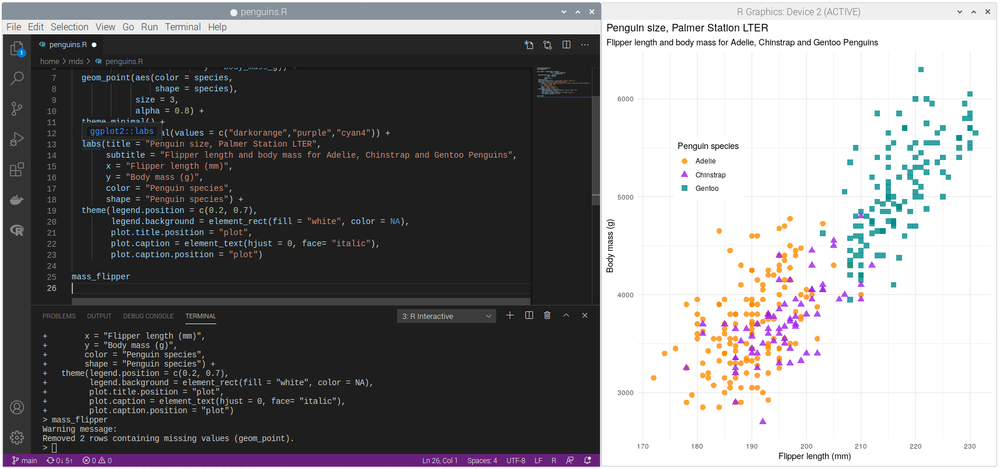

Using an IDE
What is an IDE?
An IDE or "Integrated Development Environment" is a special kind of text editor, targeted specifically at computer programming.
In princilple, you can write code in anything that will save plain text, however, an IDE will generally offer the programmer useful features like syntax highlighting and a way to execute code from a source code file one line at a time.
So, an IDE will make you more productive as a developer. How do you get one?
Installing VSCode
Microsoft recently made the excellent Visual Studio Code IDE (also know as VSCode) available for the Raspberry Pi. It's not much use for writing R out of the box, but we can install a plugin to fix that.
You can install it from the default Raspberry Pi repos using the "Add/Remove software" app.
Search for "code" or find it in the "Programming" section.

Once VSCode is installed we need to configure it for use with R.
Configuring VSCode for R
In order to use VSCode with R, you need to install a plugin. Right now, we recommend the excellent "R" plugin from the "REditorSupport" team.
If you're interested, you'll find the code repositories for this group's work on GitHub.
To install it, follow these steps:
- open VSCode
- click the "Extensions" button on the left
- Search for "R"
- Select the "R" extension by REditorSupport
- Click the "install" button

Once the plugin is installed, you're ready to start using it.
Using VSCode to write R
Now that the plugin is installed, VSCode will automatically do syntax highlighting for us for files that have the ".R" extension. In addition, if you place your cursor on a particular line in an R file and press ctrl+enter, that line will be executed in an R console and the cursor will move to the next line. You can use this to step through a file one line at a time.

You can read more about the R plugin's features on the extension's "Details" page in VSCode.